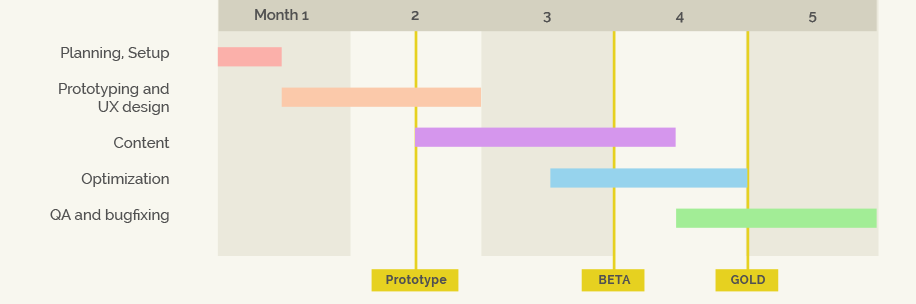

PANORAMICAL is an immersive interactive experience about exploring “musical landscapes”. Players shape the abstract worlds’ visuals and sounds.
In PANORAMICAL, you're presented with 15 different worlds, abstract spaces with beautiful sights and sounds.
You manipulate 18 different controls to explore the scene. As you move the controls the world changes gradually and so does the music.
It is an open-ended audiovisual toy where the goal is simply to explore, zone out and find beautiful combinations.
Developed over 3+ years as an independent project, PANORAMICAL was launched in 2015 on PC & Mac.
PANORAMICAL was originally designed for an analog music controller. The goal was to create an interactive experience that explored the tactile feel of analog knobs giving players fine control over an audiovisual experience.
We collaborated with artists around the world, manufactured a special controller, and released a version tailored to designers that was used in incredible ways like a modular synthesizer, a shipping container and a badger.
We were blown away by the positive response from players.
Turn peaceful mountains into thumping valleys into jazz solo forests into ominous caves,
turn day into night, turn oceans into deserts into atmosphere and the soundscape transforms with you.
Nominated for Excellence in Visual Art, Audio and Nuovo awards at the
Independent Games Festival in GDC 2016
showcased in museums and festivals around the world
"Panoramical turns sound to magical color and back again"
- Dan Solberg, killscreendaily.com"Some call it a game. Others a tool. I call it a trip, a mental and perhaps spiritual journey through realms of sound and light."
- Mike Fahey, kotaku.com"Panoramical will change the way you conceive of sound"
- Leigh Alexander, boingboing.netPANORAMICAL VR for the HTC Vive
We want to take PANORAMICAL to the next step by letting players explore its immersive worlds in VR.
Because of its achievements at allowing presence, immersion and freedom of movement we believe the HTC Vive is the ideal HMD for a VR version of PANORAMICAL.
The result will be an immersive interactive experience where you manipulate the sights and sounds of several musical environments created from the ground up for VR, with controls designed for the Vive.
See the results so far in our current prototype, where the player controls the scene by moving floating orbs around 3D space:
Like the original, PANORAMICAL VR will be carefully designed to be intuitive and let anyone pick up and play, making full use of the Vive's motion controls.
PANORAMICAL VR will encourage exploration and discovery and can be played for an indefinite amount of time. A usual playthrough will last 20-30 minutes, with more engaged players playing for 1-2 hours at a time.
PANORAMICAL VR will come to life as a room-scale experience with full use of the Vive's capabilities while remaining accesible and enjoyable while seated.
We will prototype different methods of exploring and manipulating the scenes to find playful interactions that work best with the HTC Vive:
(Mockup)
(Mockup)
(Mockup)
Since we would take content from the original game, producing PANORAMICAL VR would let us heavily focus on making a great interface for the Vive.
Once complete, there's plenty of space down the road for PANORAMICAL VR to become a showpiece for non-gaming VR:
PANORAMICAL in VR is something we really want to explore. Because it's so unique—relaxing, introspective, playful, performative—we think players around the world would see it as essential to their new growing VR game library, and we're looking forward to working with you to make this a reality.
THE TEAM
We’re an independent team of collaborators with extensive experience in game development, music and marketing. We brought PANORAMICAL to a successful launch on desktop platforms in 2015.
Fernando Ramallo
is a creative coder, designer and visual artist. He's always tinkering with abstract graphics, generative visuals and strange interactive installations.
David Kanaga
is best known for his dynamic and procedural musical scores for island-exploring Proteus and synaesthetic racing game Dyad.
Adam &
Rebekah Saltsman
build original games for mobile, desktop and console, in addition to 'publishing' games by other independent developers. They've been involved in titles like Canabalt, Hundreds, FEIST and Night in the Woods
TIMELINE
BUDGET
| Monthly cost | Months | Total | |
|---|---|---|---|
| Lead Artist (Fernando Ramallo) Design, Environment Art, Programming, User Experience |
$10,000 | 4 | $40,000 |
| Audio Designer (David Kanaga) Design, Audio Design, Music |
$10,000 | 4 | $40,000 |
| Additional Engineer Programming, Optimization, Cross-Platform support, Testing |
$10,000 | 3 | $30,000 |
| Development hardware & software | $5,000 | ||
| Marketing | $5,000 | ||
| Total: | $120,000 |
{kind=link}
{kind=link}
{kind=link}
{kind=link}
{kind=link}
{kind=link}
{kind=link}
{kind=link}